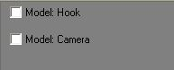
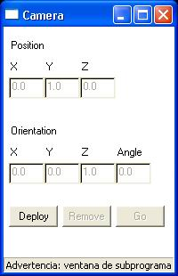
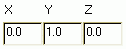
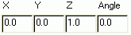

3.3.1 Funcionament del model Camera
El model camera, com ja hem dit en la introducci� del cap�tol, no t� representaci� 3D en el Place.
Per a poder accedir al model haurem d'anar a la seg�ent zona de la pantalla on apareix l'entorn 3D del Place,

i activar la casella corresponent. Seguidament ens apareixer� la finestra de control del model:


Ens diu la posici� on es troba la c�mera
Ens diu quina n'�s la seva orientaci�Situa la c�mera en la posici� on ens trobem actualment
Canvia el nostre punt de visi� pel de la c�mera
Retira la c�mera del seu lloc